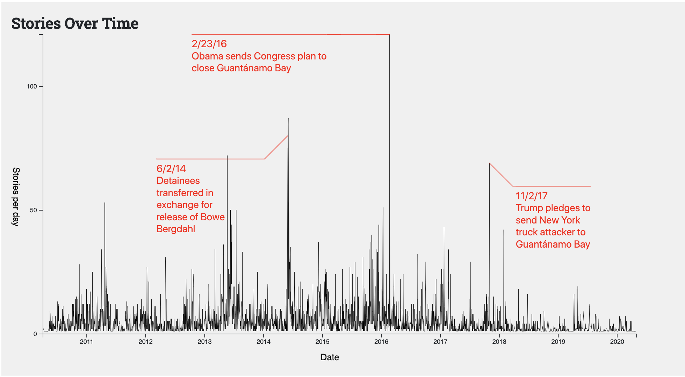

Art
Clothing Double process dye
Bleach, rit dye


Paper Suminagashi marbling
Okanara student paper, marbling ink, cloth

 >
>
 >
>
Mobile
Zora is born!
Wood, plastic, wire

Paintings
Evidence // Underground
16" x 12" acryclic
Exhibited at Rhizome D.C. in December 2024 STEAM exhibition.


Video
Ocean Side link
Shot on an iPhone 13 mini
I sometimes post photos of my art on Cara: link
I use Are.NA for research: link
Food
Kitchen Tool Library
Kitchen Tool Library is a project I founded in NYC. Design work by Clare Largomarsino.


Fermentation 101
Workshop for Community Gardeners in NYC with Justine Garcia.

Community Cake
Body Process is a Brooklyn-based collective of somatic and energy work practitioners dedicated to creating accessible spaces for healing, connection, and transformation through body-centered practices. In November
2024, Body Process hosted a meal for people to come together and get nourished. I baked a cake for the event, and it turned out beautifully! Enjoy these photos of my cake.
Grief ferment
I am grieving on a daily basis and use fermentation to process my grief.
I am interested to learn about other fermentation-related or food-related grief practices. If you would to discuss, please email me.
Data
A Million Maps of Missouri
Data viz, MCMC sampling
For a project with the Princeton Gerrymandering Project and Clean Missouri,
I created an ensemble of possible redistricting plans using MCMC sampling and visualized the result.
Source code

Who's Still Talking About Guantánamo Bay?
Data viz, news media analysis
I investigated how the media has reported on the prison at Guantánamo Bay from 2010-2020.
Source code

about
contact